/* gregory-crewdson - proofs */
12 plates. Deterministic overlays rendered by the composition-analysis skill.
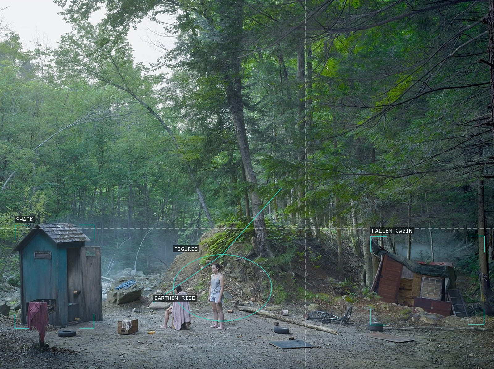
01-the-haircut
Two improvised shelters bracket a small pair beneath a rising wood.
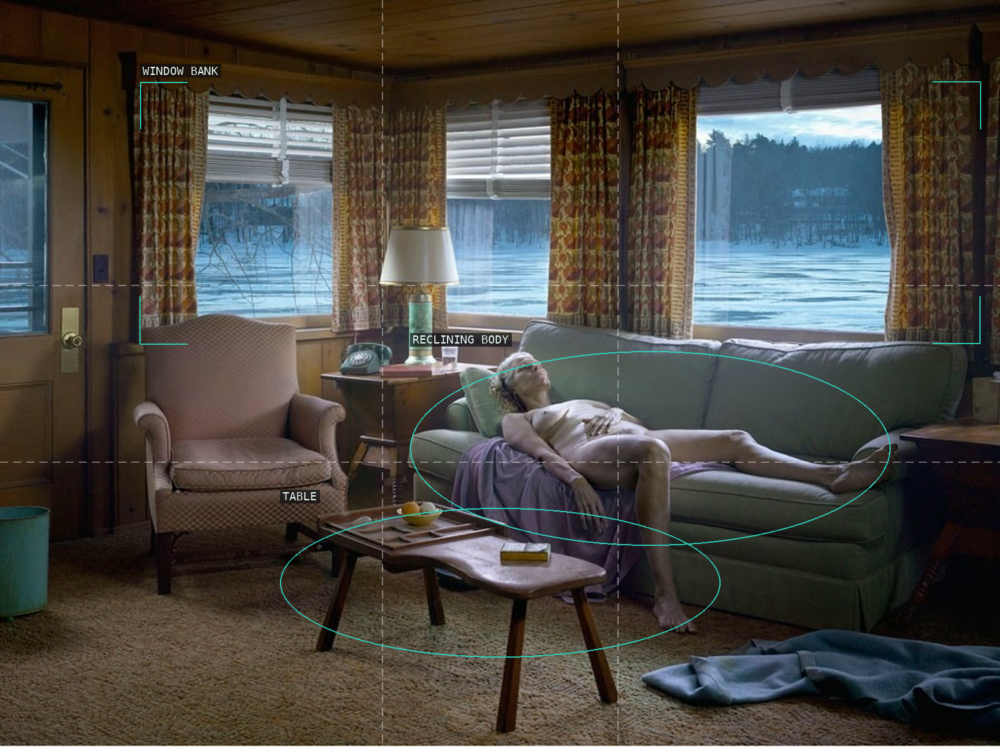
02-reclining-woman-on-sofa
Window band, sofa, and table make a shallow lateral stage.
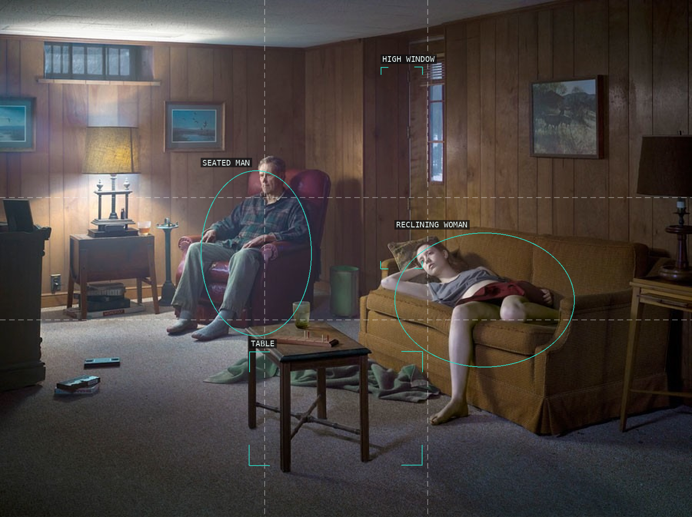
03-the-basement
Separated figures face across a deliberately open carpet field.
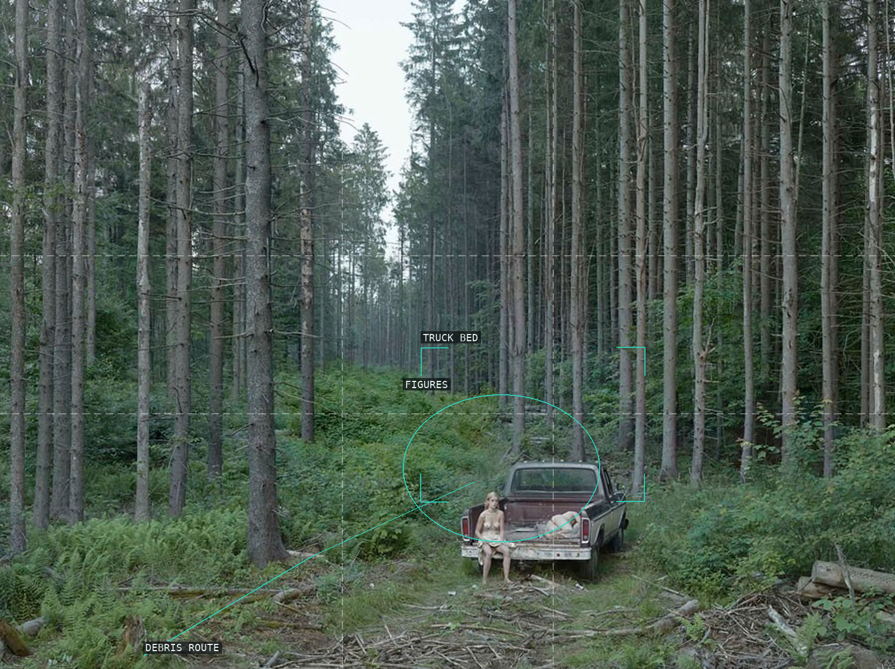
04-the-pickup-truck
A truck-stage ends a corridor of dense vertical trees.
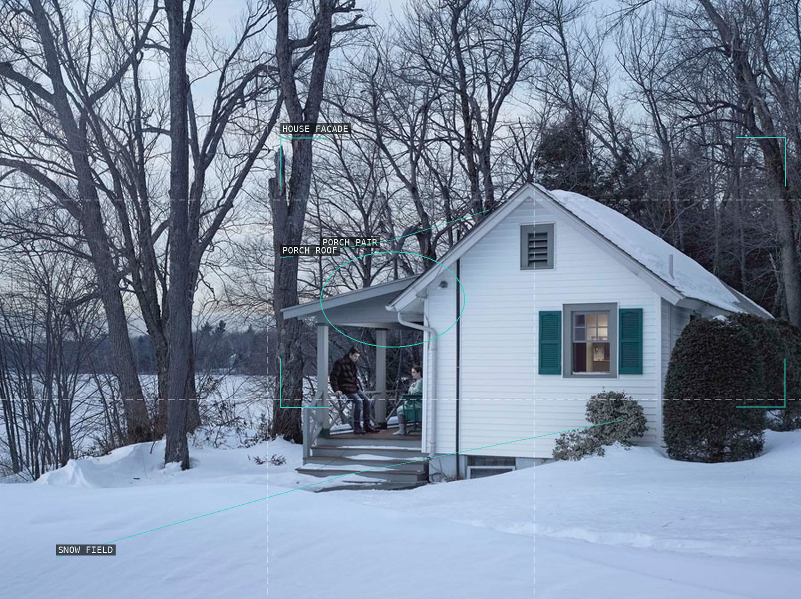
05-the-motel
A porch pair is held against a facade and broad snow foreground.
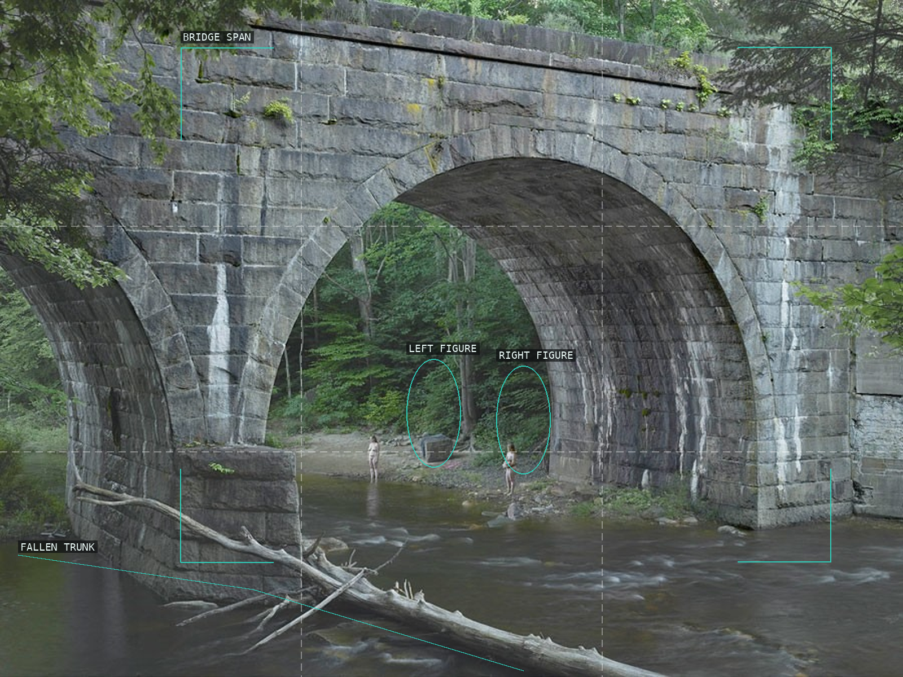
06-beneath-the-bridge
A bridge span reduces the riverside figures to a measured scale.
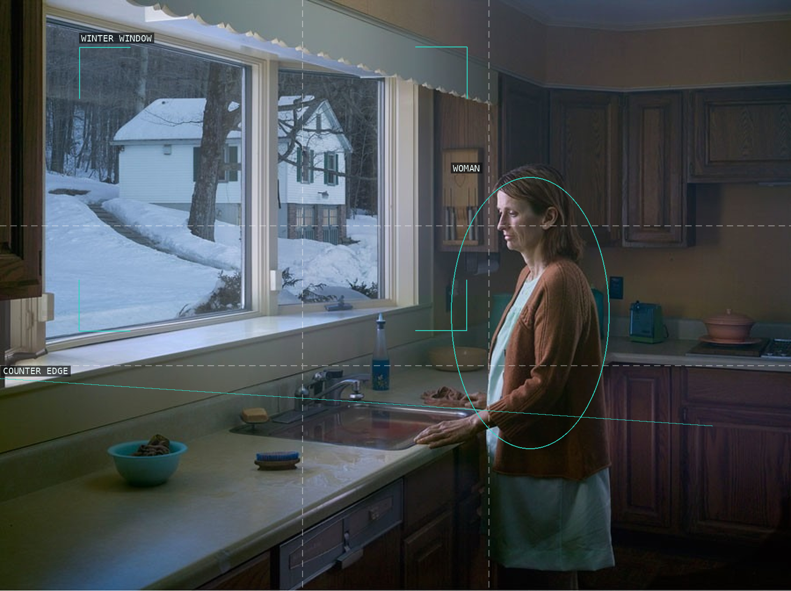
07-woman-at-sink
A counter ties a cold window to a solitary figure.
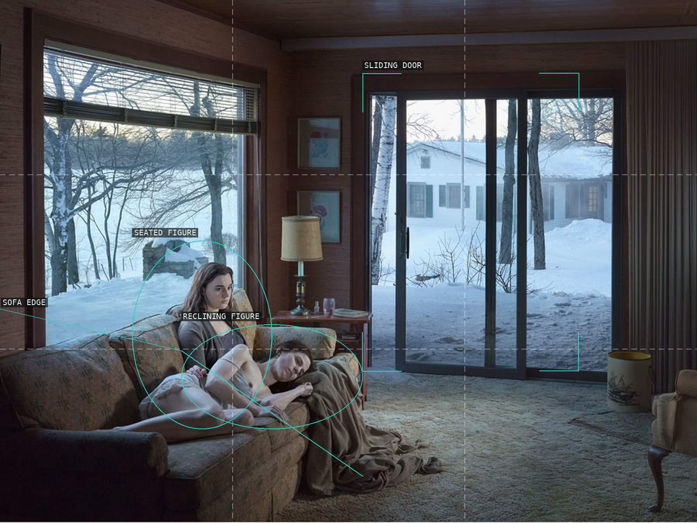
08-mother-and-daughter
A couch-bound pair is separated from a bright doorway.
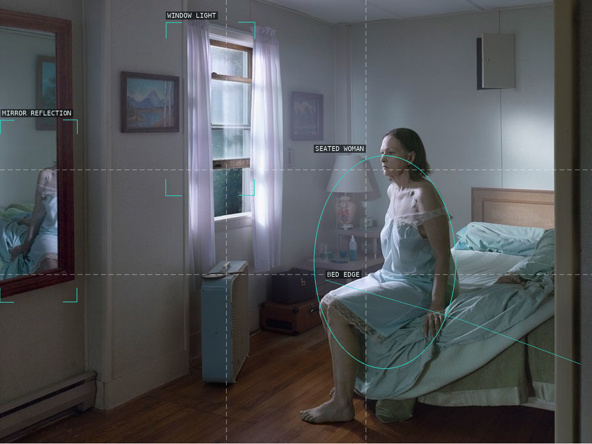
09-seated-woman-on-bed
Window, mirror, and bed set a figure between competing looks.
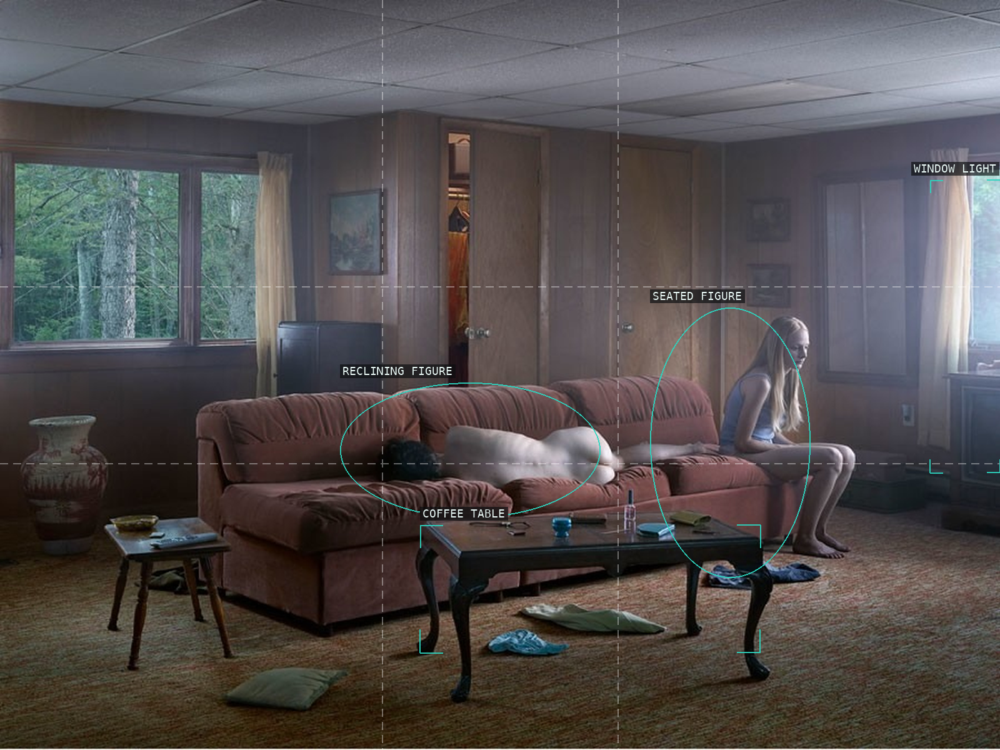
10-the-den
Two bodies share a low room across a coffee table.
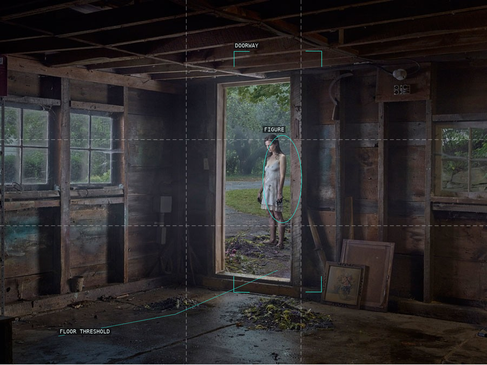
11-the-shed
A bright doorway turns a shed interior into a threshold.
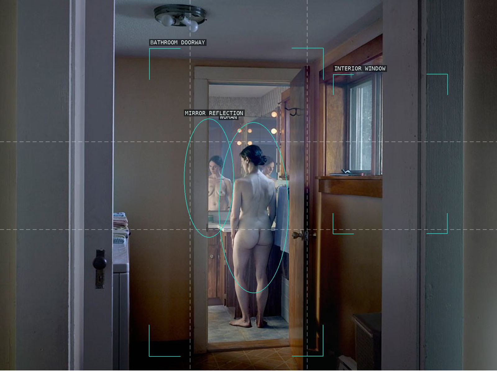
12-woman-in-bathroom
Nested doorways and a mirror multiply one body in a passage.